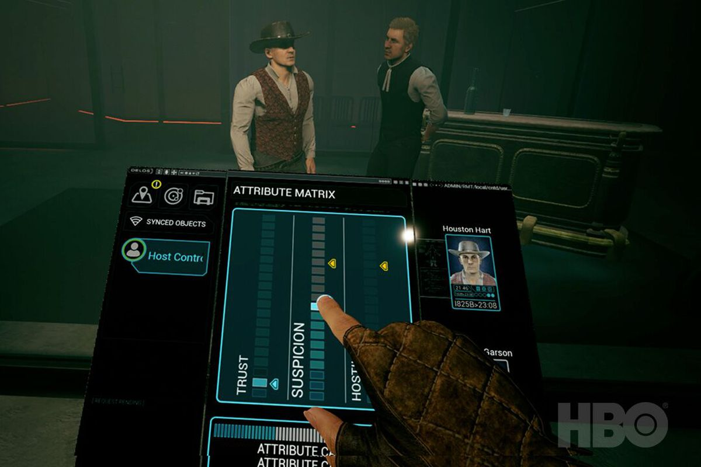

Westworld Awakening, a new video game developed by HBO and Sprint Vector studio Survios, was the first time in a long time I’ve felt actual fear while in virtual reality. I was embodying Kate, a recently self-aware android in the universe of the hit HBO show about artificial intelligence, and I was instructed by my human companion over voice com to start sprinting. If I didn’t, a murderous, deluded android — unaware that he was no longer tasked with playing his scripted part — would cut me down with a Bowie knife. So I started swinging my arms furiously.
Unlike most VR games, Westworld Awakening features a unique movement mechanic, wherein swinging your arms at your side causes you to jog or sprint at the speed your arms move. Survios conceived of the method for its 2017 game Sprint Vector, and it carried it over to Westworld Awakening as a means of allowing you to explore a 3D space without having to physically move your body around the room you’re in. It helps that moving your arms can also trick your brain, at least a little bit, into thinking you’re actually running, which helps to reduce nausea.
Westworld Awakening is a unique product. It’s the first full-fledged VR game set in the universe created by showrunners Lisa Joy and Jonathan Nolan. The duo took the idea from the 1973 Michael Crichton science fiction film and expanded it into an ambitious tale about AI, the nature of human consciousness, and the fractures that begin forming in a dystopian near-future that treats entertainment of the rich as paramount to human suffering. With season 3 scheduled to begin airing next year, Westworld is among the most popular and anticipated TV shows in recent memory, giving HBO a potential new Game of Thrones to build out over the next half-decade.
Due to how fully realized the Westworld setting is, it’s become ripe for all manner of side stories and marketing one-offs, before a proper TV spinoff inevitably gets greenlit. There was a Westworld VR experience a few years ago, created in-house by HBO, to go along with the first season. HBO also went to the SXSW festival in Austin last year to promote season 2 with a full re-creation of the Old West town Sweetwater, equipped with dozens of actors playing scripted androids while regular conference participants got to play the part of visiting guests in an elaborate and somewhat messy meta affair.
But there has yet to be a proper standalone story told as part of the show’s growing expanded universe, until Westworld Awakening. The game is set during season 2 of the show, during the host rebellion in the Mesa Hub when violence and pandemonium are breaking out at Westworld HQ.
Although it won’t feature primary cast members like rebellion leaders Dolores or Maeve, the game will tell a canonical story about a host’s awakening outside Westworld proper and her coming to terms with the nature of her existence, with the help of the human who created her and gave her an identity. Survios tells me Nolan (an avid video game fan) and Joy based many features of Westworld off the power fantasy inherent to open-world games, which helped shape the story early on.
Most of Westworld Awakening appears to play out like survival horror, although I was only able to play an hour of the five or six-hour experience. As protagonist Kate, you’re tasked with basically wrapping your head around the real-life technology of the Mesa Hub through the signature tablets characters use in the show.
With the tablet, you’re solving puzzles, opening locked doors, and so on, typically following the instructions of the human who crafted your back story and is trying to save you. But interestingly, because you’re in VR, the way you interact with the world and learn about the game’s various mechanics mirrors that of your character, who has never seen the modern, real world before and has no idea how to interact with pretty much anything she encounters.
I found that getting the hang of the tablet, its various scanning features, and maneuvering the world using the arm-swinging motion felt disorienting at first, as most VR experiences do. But as I became more comfortable, I was able to start breezing through some of the puzzles and finding my way around without any of the awkward stumbling or hold ups that often require VR demo helpers to step in and tell you where to go. Similarly, the character Kate was becoming more adept at keeping herself safe and away from the murderous Hank, the serial killer android who seems to still think he’s playing out his Westworld script.
There were a few hiccups here and there. Moving around works well enough by swinging your arms, but I was constantly finding myself wrapped in the HTC Vive cord, because there wasn’t a wireless adapter for the headset with my demo. HBO says the game won’t work on the Oculus Quest, so using a Vive with the adapter is the only way to get wireless play here, which could be a huge plus.
There was also just some plain weirdness with how you’re supposed to move side to side or make more minor adjustments to where you’re standing. Survios says a gripping mechanic becomes more integral later on in the game to help you hold onto objects so you can peek around corners or pull yourself along the wall to get through tight spaces. But I found myself making some truly bizarre body movements just to inch a little closer to an elevator terminal or make sure I wasn’t clipping through a door I was trying to open. Beyond that, the game looks and plays smoothly, and there was never anything truly disorienting about the experience that wasn’t clearly intended by design.
HBO says the game is not just getting announced today, but also becoming available starting tomorrow. It will cost $29.99 and be playable on the Oculus Rift (as well as the newer Rift S), the HTC Vive, and Vive Pro through SteamVR, Oculus Store, and Viveport support. At launch, the game will not be playable on Valve’s new Index headset, according to HBO, but that could change down the line.